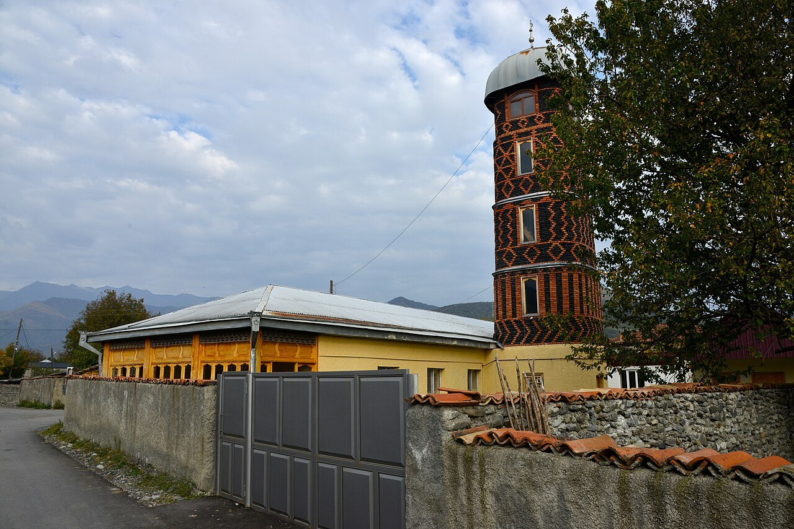
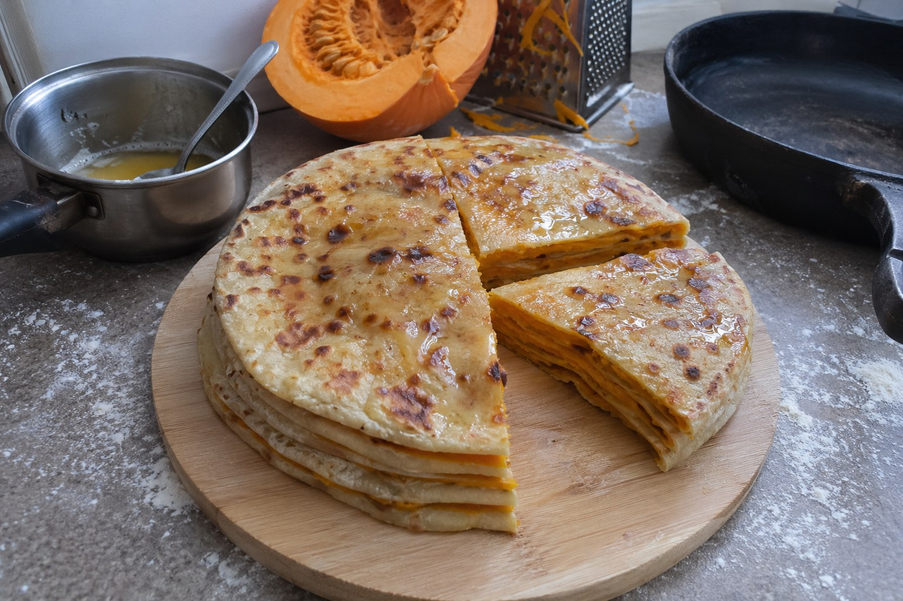

Пот

Трите на крупной. Мелкая — для детей и для больных, а мы с вами пока здоровые. Тыкву держите не за хвост, за бок, а то пальцы оставите в миске, и придётся вас тоже класть в начинку. Это я шучу. У нас женщины до зикра шутят, а на зикре поют.
В половине двенадцатого я уйду. Вы останетесь здесь, во дворе. На зикр вам нельзя, два раза нельзя: вы мужчина, и вы не наш. Одно бы я ещё простила, два — нет. Сидите на лавке, вот вам чай, вот орехи. Слушать можно. Стена у нас тонкая, её мой муж строил, он всё строил тонко, кроме характера.
Тыкву я выбирала с сентября. Она лежит на крыше и спеет, пока мы не замёрзнем. Если она звенит, когда стучишь, — пора. Эта звенела вчера, как пустое ведро. Значит, сегодня. Мы печём с ней лепёшки с мёдом, гаабак чаабилгиш. Вы не повторите, не мучайтесь. Скажите в Тбилиси «тыквенный хачапури», вас поймут и всё равно не так сделают.
Вы по-русски, я по-русски, хорошо. По-грузински я говорю лучше, чем по-нашему, вы не удивляйтесь. По-нашему — это по-кистински, а кистинский — это чеченский, только старый, как сундук у бабушки. Когда к нам пришли чеченцы из Грозного, в девяносто девятом, они смеялись. Женщина, которая жила у меня, Хеда, сказала: «Ты говоришь, как моя прабабушка из горного села. Так уже никто не говорит». Я сказала: «Так говорят здесь. Значит, кто-то говорит». Она жила у меня три года с двумя детьми. Я учила её детей грузинскому, она учила меня, как в Грозном говорят сейчас. Потом они уехали обратно. Звонит на Новый год. Говорит теперь, как я, — нахваталась. В Грозном над ней смеются.
Хватит тереть. Давайте сюда. Масло в казан, тыкву туда, пусть томится, пока не станет как каша. Мёд потом, когда остынет немного, — горячий мёд горький становится, я так считаю, хотя врачи говорят другое. Мёд наш, из Биркиани, там пчёлы злые, а мёд добрый. У людей иногда так же.
Бабушка моя была крещёная. Вы не знали? У нас многие были. При царе священники ходили по сёлам, крестили, строили церкви. Говорят, крещёным давали подарки — кому платок, кому муку. Бабушку крестили маленькую, она не помнила, как. Помнила только, что ей дали белый платок, и она его потом всю жизнь носила по праздникам. По каким праздникам — уже не говорила.
Мечеть в Дуиси построили до революции, большевики её закрыли, открыли только в шестидесятом году. Я была маленькая, помню, как мужчины мыли пол, а женщины стояли во дворе и плакали, как на свадьбе. В те же годы в Омало построили часовню. И бабушка ходила и туда, и туда. В мечеть в пятницу, в часовню на Пасху. Я её спросила: так ты чья — их или наша? Она сказала: «Бог один, дорог две, а ноги у меня ещё крепкие». Потом ноги стали слабые, и она ходила только в мечеть, потому что ближе. Это она тоже так объясняла.
На Пасху мы ходили к соседям-грузинам, в Джоколо, до девяностых годов ещё ходили. Они красили яйца, давали нам, мы давали им наш хлеб. Вина мы не пили. Иногда пили. Если честно, пили. Сейчас уже не пьём, а соседей тех уже нет: кто уехал, кто на кладбище. В Джоколо христиан больше не осталось, церковь стоит, а креста на ней нет.
Отец мой был лошадник. На скачках, на празднике, всё ущелье собиралось — кисты, грузины, тушины, все вместе. Коню перед скачкой давали ячмень, над ним читали молитву, ноги мыли молоком. Отец говорил, что так делали до всех богов, и все боги потом с этим согласились. Он один раз выиграл, на сером. Серый потом сдох, а отец до старости говорил «на сером» вместо «в молодости». «Это было на сером» — значит, давно и хорошо.
Через дорогу от нас жили осетины, Габараевы. Муж мой с их Сосланом вместе ходил на сенокос, а я с Фатимой — на базар в Ахмету. Они пекли пироги с тыквой почти как мы, только без мёда, с сыром. Фатима говорила: «Вы мёдом всё портите». Я говорила: «А вы сыром». В девяносто первом они уехали, тогда многие осетины из ущелья уехали, время было такое. Ключ отдали нам. Дом стоял, пока не сгнил, а груша у них во дворе до сих пор родит. Мы собираем. Не воруем — собираем, это разница. Фатима один раз позвонила, лет десять назад, спросила про грушу. Я сказала: родит. Она сказала: хорошо. Больше мы ни о чём не говорили, а проговорили полчаса.
Муж мой умер шесть лет назад. Он был не лошадник, как отец, он был строитель, всё в ущелье строил: школу, магазин, половину заборов. И стену эту, тонкую. Говорил: «Толстые стены строят, когда боятся соседей. А я соседей не боюсь, я их слушаю». Вот и вы послушаете.
Тесто. Мука, мацони, вода, соль. Мешайте рукой. Не ложкой, рукой. Тесто должно знать, кто его делает, иначе оно ведёт себя как чужой ребёнок.
Зикр у нас всегда был, и при советах был. Только тихо. Собирались в доме, окна закрывали, пели вполголоса. Это трудно — петь зикр вполголоса. Это как бежать на цыпочках. Мама меня взяла в круг, когда мне было лет четырнадцать. Я стояла с краю и не попадала. Потом попала. Когда попадаешь, ты уже не ты, ты — один голос из двадцати, и все двадцать — один голос. Объяснить нельзя. Вы писатель, вы бы, наверное, объяснили, но вам нельзя на зикр, так что и вы не объясните.
А в девяносто девятом пришли беженцы. Много, очень много — в каждом доме кто-то жил, у некоторых по две семьи. Пришли с детьми, с узлами, с бабушками на руках. И пришли не только с детьми. Пришли и другие. Про других я говорить не буду, их тут все помнят, только каждый по-своему. Тогда про нас по телевизору стали говорить такое, что я выключала телевизор, а потом включала обратно, потому что надо же знать, что про тебя говорят.
И вот мы, женщины, пошли к старейшинам. Нас было человек пятнадцать. Мы сказали: разрешите нам петь зикр открыто. Не в доме за занавеской, а чтобы люди видели. Пусть приезжают с камерами, пусть смотрят. Пусть видят, что мы не воюем, а поём. Старики долго думали. Один сказал: «Женщинам — открыто?» Я сказала: «А мужчинам что — закрыто? Вы открыто куда ходите?» Он обиделся. Потом разрешил. С тех пор мы поём, и к нам приезжают: журналисты, туристы, один раз немцы с микрофоном на палке. Немцы плакали. Я не знаю, почему немцы плакали, но плакали хорошо, честно.
Масло растопите в маленькой кастрюльке, мёду туда ложку. Это для верха.
Теперь вот что. Нас было двадцать. Сейчас нас — сколько? — девять. Самой молодой за шестьдесят. Внучки мои поют на свадьбах, красиво поют, я их слушаю и плачу. Но в круг не встают. Говорят: «Бабо, это не по правилам, так нельзя молиться, это всё придумали потом». У них молитва другая, строже, без песни. Я с ними не спорю. Я спорила с отцом, с мужем, с председателем колхоза, с телевизором. С внучками не спорю: они правы по-своему, а я по-своему, и через двадцать лет никто не будет прав, все будут на кладбище и помолчат вместе.
У соседки моей сын уехал. Далеко, туда, где жарко. И не вернулся. Она теперь печёт по пятницам на одну лепёшку меньше. Я её не спрашиваю. Она приходит на зикр и стоит рядом со мной. Поёт громче всех.
Делите тесто на шесть кусков. Каждый кусок раскатайте в лепёшку, как блюдце. Начинку в середину, края собрать наверх, как кошелёк, защипнуть. Перевернуть и раскатать ещё раз, тонко, но не до дырки. Если дырка — ничего, тыква вытечет на сковородку, и это будет самый вкусный кусок, его съест тот, кто печёт.
Сковородка сухая, без масла. Минуты три с одной стороны, три с другой. Пятна должны быть, как на сером в яблоках, только коричневые. Это я опять про отцовского коня.
Ну всё. Я пошла. Сковородку оставляю вам: пеките, пока мы поём. Сгорит одна — ничего, её съем я, хозяйке можно. Слушать и печь можно одновременно, я проверяла.
Сейчас начнётся.
…
Слышали? Слышали. Я по лицу вижу.
Вы спрашиваете, почему мы такие мокрые. Это пот. Зикр — это работа. Сегодня мы пели за Зарему, она умерла в среду, ей было девяносто два. Мы верим, что пот, который льётся во время зикра, смывает грехи того, за кого поёшь. У Заремы грехов было немного, но мы всё равно постарались, на всякий случай. Женщина она была с характером, мало ли что.
А в дверях, вы видели, стояла девочка. Хава, внучка Заремы. Ей двенадцать. Она стояла весь зикр и не входила. Губами шевелила. Я видела. Я ничего ей не сказала. Скажешь — она уйдёт. Не скажешь — может быть, в следующую пятницу встанет на порог. А через год — с краю. С краю — это уже в кругу.
Теперь показывайте, что напекли. Ну. Две хорошие, три ничего, одна горелая — моя. Масло я подогрею. Каждую — в масло с мёдом, с двух сторон, и стопкой, одна на другую. Верхняя по нашему обычаю — самой старой. Сегодня это опять я. Но я её отдаю вам: пока гость в доме, он старше всех, так тоже наш обычай, и он главнее. Вторая — Хаве, отнесите, она у ворот, не стесняйтесь, она вас не съест. Третья — соседке, у которой сын.
Ешьте, не смотрите на меня, я свою горелую доем. Вы слышали зикр. Тот, кто слышал, — уже немножко помнит. А нам сейчас очень нужно, чтобы кто-то помнил, даже вы.

Гаабак чаабилгиш — кистинские лепёшки с тыквой и мёдом
На шесть лепёшек
Что нужно
Для теста:
- мука — 400 г;
- мацони — 200 г;
- вода — 50–70 мл;
- соль — 1 ч. л.;
- сода — ½ ч. л.
Для начинки:
- тыква (очищенная, сладких сортов) — 800 г;
- топлёное или сливочное масло — 50 г;
- мёд — 3 ст. л.;
- соль — щепотка.
Для смазывания:
- топлёное масло — 100 г;
- мёд — 2 ст. л.
Как делать
1. Тыкву натрите на крупной тёрке. Растопите в толстостенной кастрюле 50 г масла, выложите тыкву, посолите и томите под крышкой на слабом огне 20–25 минут, помешивая, пока она не станет мягкой, как пюре. Если остаётся сок — откройте крышку и выпарьте. Разомните, дайте остыть до тёплого и вмешайте мёд.
2. Для теста смешайте мацони с содой, добавьте соль и муку, вливая воду понемногу. Замесите мягкое тесто, которое не липнет к рукам. Накройте и оставьте на 20–30 минут.
3. Разделите тесто на 6 частей. Каждую раскатайте в круг диаметром 12–14 см.
4. В центр положите 2–3 столовые ложки начинки, соберите края наверх мешочком и защипните. Переверните швом вниз и аккуратно раскатайте в лепёшку толщиной 4–5 мм, диаметром 18–20 см.
5. Разогрейте сухую сковороду (без масла) и пеките лепёшки на среднем огне по 3–4 минуты с каждой стороны, до коричневых пятен.
6. Растопите масло для смазывания и смешайте с мёдом. Каждую горячую лепёшку обмакните или обильно смажьте с обеих сторон и складывайте стопкой.
7. Подавайте тёплыми, разрезав стопку на четыре части, как торт.
Верхнюю лепёшку отдают самому старому за столом, а если в доме гость — гостю.
Тбилиси, ноябрь 2026